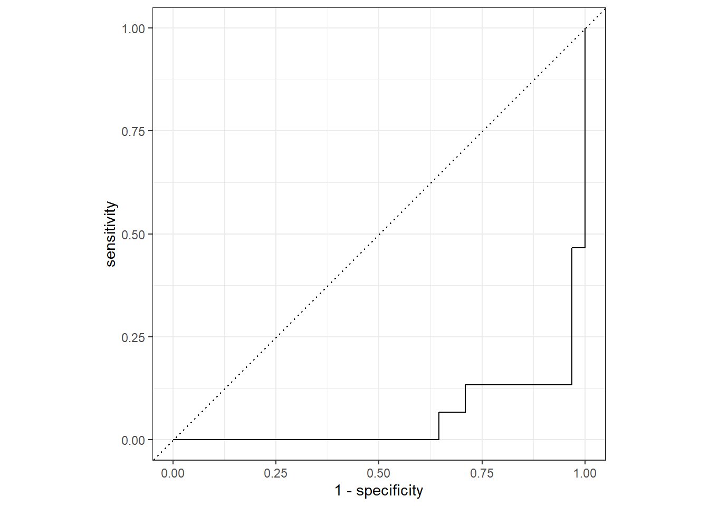

# Standard
library(tidyverse)
# Modeling
library(parsnip)
library(tidymodels)
library(rstanarm)
library(broom)
# Preprocessing & Sampling
library(recipes)
library(rsample)
# Modeling Error Metrics
library(yardstick)
# Plotting Decision Trees
library(rpart)# Modeling ----------------------------------------------------------------
# Read and visualize data
bike_orderlines_tbl <- readRDS("./raw_data/bike_orderlines.rds")
glimpse(bike_orderlines_tbl)## Rows: 15,644
## Columns: 18
## $ order_id <dbl> 1, 1, 2, 2, 3, 3, 3, 3, 3, 4, 5, 5, 5, 5, 6, 6, 6, 6, 7…
## $ order_line <dbl> 1, 2, 1, 2, 1, 2, 3, 4, 5, 1, 1, 2, 3, 4, 1, 2, 3, 4, 1…
## $ order_date <dttm> 2015-01-07, 2015-01-07, 2015-01-10, 2015-01-10, 2015-0…
## $ model <chr> "Spectral CF 7 WMN", "Ultimate CF SLX Disc 8.0 ETAP", "…
## $ model_year <dbl> 2021, 2020, 2021, 2019, 2020, 2020, 2020, 2021, 2020, 2…
## $ category_1 <chr> "Mountain", "Road", "Mountain", "Road", "Mountain", "Hy…
## $ category_2 <chr> "Trail", "Race", "Trail", "Triathlon Bike", "Dirt Jump"…
## $ category_3 <chr> "Spectral", "Ultimate", "Neuron", "Speedmax", "Stitched…
## $ price <dbl> 3119, 5359, 2729, 1749, 1219, 1359, 2529, 1559, 3899, 6…
## $ quantity <dbl> 1, 1, 1, 1, 1, 1, 1, 1, 1, 1, 1, 2, 1, 1, 1, 1, 1, 1, 1…
## $ total_price <dbl> 3119, 5359, 2729, 1749, 1219, 1359, 2529, 1559, 3899, 6…
## $ frame_material <chr> "carbon", "carbon", "carbon", "carbon", "aluminium", "c…
## $ weight <dbl> 13.80, 7.44, 14.06, 8.80, 11.50, 8.80, 8.20, 8.85, 14.4…
## $ url <chr> "https://www.canyon.com/en-de/mountain-bikes/trail-bike…
## $ bikeshop <chr> "AlexandeRad", "AlexandeRad", "WITT-RAD", "WITT-RAD", "…
## $ location <chr> "Hamburg, Hamburg", "Hamburg, Hamburg", "Bremen, Bremen…
## $ lat <dbl> 53.57532, 53.57532, 53.07379, 53.07379, 48.78234, 48.78…
## $ lng <dbl> 10.015340, 10.015340, 8.826754, 8.826754, 9.180819, 9.1…model_sales_tbl <- bike_orderlines_tbl %>%
select(total_price, model, category_2, frame_material) %>%
group_by(model, category_2, frame_material) %>%
summarise(total_sales = sum(total_price)) %>%
ungroup() %>%
arrange(desc(total_sales))
model_sales_tbl %>%
mutate(category_2 = as_factor(category_2) %>%
fct_reorder(total_sales, .fun = max) %>% fct_rev()) %>%
ggplot(aes(frame_material, total_sales)) +
geom_violin() +
geom_jitter(width = 0.1, alpha = 0.5, color = "#2c3e50") +
#coord_flip() +
facet_wrap(~ category_2) +
scale_y_continuous(labels = scales::dollar_format(scale = 1e-6, suffix = "M", accuracy = 0.1)) +
tidyquant::theme_tq() +
labs(
title = "Total Sales for Each Model",
x = "Frame Material", y = "Revenue"
)# Preprocess data for fitting into a model
bike_features_tbl <- readRDS("./raw_data/bike_features_tbl.rds")
glimpse(bike_features_tbl)## Rows: 231
## Columns: 67
## $ bike_id <dbl> 2875, 2873, 2874, 2876, 2877, 2225, 2091, …
## $ model <chr> "Aeroad CF SL Disc 8.0 Di2", "Aeroad CF SL…
## $ model_year <dbl> 2020, 2020, 2020, 2020, 2020, 2019, 2019, …
## $ frame_material <chr> "carbon", "carbon", "carbon", "carbon", "c…
## $ weight <dbl> 7.60, 7.27, 7.10, 7.73, 7.83, 6.80, 6.80, …
## $ price <dbl> 4579, 6919, 6429, 5069, 3609, 6139, 5359, …
## $ category_1 <chr> "Road", "Road", "Road", "Road", "Road", "R…
## $ category_2 <chr> "Race", "Race", "Race", "Race", "Race", "R…
## $ category_3 <chr> "Aeroad", "Aeroad", "Aeroad", "Aeroad", "A…
## $ gender <chr> "unisex", "unisex", "unisex", "unisex", "u…
## $ url <chr> "https://www.canyon.com/en-de/road-bikes/r…
## $ Frame <chr> "Canyon Aeroad CF SL Disc", "Canyon Aeroad…
## $ Fork <chr> "Canyon FK0041 CF SLX Disc", "Canyon FK004…
## $ `Rear Derailleur` <chr> "Shimano Ultegra Di2 R8050 SS", "SRAM RED …
## $ `Front Derailleur` <chr> "Shimano Ultegra Di2 R8050", "SRAM RED eTa…
## $ Cassette <chr> "Shimano Ultegra R8000, 11-speed, 11-28T",…
## $ Crank <chr> "Shimano Ultegra R8000", "SRAM RED D1", "S…
## $ `Bottom bracket` <chr> "Shimano Pressfit BB72", "SRAM Pressfit RE…
## $ `Thru Axle` <chr> "Canyon Thru Axle", "Canyon Thru Axle", "C…
## $ Cockpit <chr> "Canyon H36 Aerocockpit CF", "Canyon H36 A…
## $ Saddle <chr> "Selle Italia SLR", "Selle Italia SLR", "S…
## $ Seatpost <chr> "Canyon S27 Aero VCLS CF", "Canyon S27 Aer…
## $ Pedals <chr> "None included", "None included", "None in…
## $ `Derailleur hanger` <chr> "Shop Derailleur Hanger GP0211-01", "Shop …
## $ Battery <chr> "", "SRAM eTap Powerpack", "", "SRAM eTap …
## $ Brake <chr> "", "", "", "", "", "", "", "", "", "", ""…
## $ `Shift Lever` <chr> "", "", "", "", "", "", "Shimano Di2 Remot…
## $ Chain <chr> "", "", "", "", "", "", "Shimano CN-HG901 …
## $ Stem <chr> "", "", "", "", "", "", "", "Canyon V13", …
## $ Handlebar <chr> "", "", "", "", "", "", "", "Canyon H16 Ae…
## $ Headset <chr> "", "", "", "", "", "", "", "", "", "", ""…
## $ Motor <chr> "", "", "", "", "", "", "", "", "", "", ""…
## $ `Battery Charger` <chr> "", "", "", "", "", "", "", "", "", "", ""…
## $ `Flat Pedals` <chr> "", "", "", "", "", "", "", "", "", "", ""…
## $ Chainguard <chr> "", "", "", "", "", "", "", "", "", "", ""…
## $ `Aero Bar` <chr> "", "", "", "", "", "", "", "", "", "", ""…
## $ `Brake Lever / Master` <chr> "", "", "", "", "", "", "", "", "", "", ""…
## $ `Wheel Tire System` <chr> "", "", "", "", "", "", "", "", "", "", ""…
## $ `Suspension Fork` <chr> "", "", "", "", "", "", "", "", "", "", ""…
## $ `Disc Brake` <chr> "", "", "", "", "", "", "", "", "", "", ""…
## $ Grips <chr> "", "", "", "", "", "", "", "", "", "", ""…
## $ Chainring <chr> "", "", "", "", "", "", "", "", "", "", ""…
## $ Display <chr> "", "", "", "", "", "", "", "", "", "", ""…
## $ Modeswitch <chr> "", "", "", "", "", "", "", "", "", "", ""…
## $ `Rear Shock` <chr> "", "", "", "", "", "", "", "", "", "", ""…
## $ Light <chr> "", "", "", "", "", "", "", "", "", "", ""…
## $ Fender <chr> "", "", "", "", "", "", "", "", "", "", ""…
## $ `Bike Racks` <chr> "", "", "", "", "", "", "", "", "", "", ""…
## $ `Brake 1` <chr> "", "", "", "", "", "SRAM S-900 Direct Mou…
## $ `Brake 2` <chr> "", "", "", "", "", "SRAM S-900 Direct Mou…
## $ `Shift-/ Brake Lever 1` <chr> "Shimano Ultegra Di2 R8070, 11-speed", "SR…
## $ `Shift-/ Brake Lever 2` <chr> "Shimano Ultegra Di2 R8070, 11-speed", "SR…
## $ `Wheel 1` <chr> "DT Swiss ARC 1400 Dicut", "DT Swiss ARC 1…
## $ `Wheel 2` <chr> "DT Swiss ARC 1400 Dicut", "DT Swiss ARC 1…
## $ `Tyre 1` <chr> "Continental Grand Prix 5000 / Attack 23 …
## $ `Tyre 2` <chr> "Continental Grand Prix 5000, 25 mm", "Con…
## $ `Handlebar Tape 1` <chr> "Canyon Ergospeed Gel", "Canyon Ergospeed …
## $ `Handlebar Tape 2` <chr> "Canyon bar-end plug", "Canyon bar-end plu…
## $ `Manuals and Accessories 1` <chr> "Canyon tool case", "Canyon tool case", "C…
## $ `Manuals and Accessories 2` <chr> "DT Swiss warranty & intended use manual",…
## $ `Manuals and Accessories 3` <chr> "Canyon starter box", "Canyon starter box"…
## $ `Manuals and Accessories 4` <chr> "", "", "", "", "", "", "", "", "", "BAG R…
## $ `Manuals and Accessories 5` <chr> "", "", "", "", "", "", "", "", "", "", ""…
## $ `Manuals and Accessories 6` <chr> "", "", "", "", "", "", "", "", "", "", ""…
## $ `Manuals and Accessories 7` <chr> "", "", "", "", "", "", "", "", "", "", ""…
## $ `Manuals and Accessories 8` <chr> "", "", "", "", "", "", "", "", "", "", ""…
## $ `Brake Rotor` <list> "Shimano RT800", "SRAM Centerline X", "Sh…bike_features_tbl <- bike_features_tbl %>%
select(frame_material:gender, `Rear Derailleur`, `Shift Lever`) %>%
mutate(
`shimano dura-ace` = `Rear Derailleur` %>% str_to_lower() %>% str_detect("shimano dura-ace ") %>% as.numeric(),
`shimano ultegra` = `Rear Derailleur` %>% str_to_lower() %>% str_detect("shimano ultegra ") %>% as.numeric(),
`shimano 105` = `Rear Derailleur` %>% str_to_lower() %>% str_detect("shimano 105 ") %>% as.numeric(),
`shimano tiagra` = `Rear Derailleur` %>% str_to_lower() %>% str_detect("shimano tiagra ") %>% as.numeric(),
`Shimano sora` = `Rear Derailleur` %>% str_to_lower() %>% str_detect("shimano sora") %>% as.numeric(),
`shimano deore` = `Rear Derailleur` %>% str_to_lower() %>% str_detect("shimano deore(?! xt)") %>% as.numeric(),
`shimano slx` = `Rear Derailleur` %>% str_to_lower() %>% str_detect("shimano slx") %>% as.numeric(),
`shimano grx` = `Rear Derailleur` %>% str_to_lower() %>% str_detect("shimano grx") %>% as.numeric(),
`Shimano xt` = `Rear Derailleur` %>% str_to_lower() %>% str_detect("shimano deore xt |shimano xt ") %>% as.numeric(),
`Shimano xtr` = `Rear Derailleur` %>% str_to_lower() %>% str_detect("shimano xtr") %>% as.numeric(),
`Shimano saint` = `Rear Derailleur` %>% str_to_lower() %>% str_detect("shimano saint") %>% as.numeric(),
`SRAM red` = `Rear Derailleur` %>% str_to_lower() %>% str_detect("sram red") %>% as.numeric(),
`SRAM force` = `Rear Derailleur` %>% str_to_lower() %>% str_detect("sram force") %>% as.numeric(),
`SRAM rival` = `Rear Derailleur` %>% str_to_lower() %>% str_detect("sram rival") %>% as.numeric(),
`SRAM apex` = `Rear Derailleur` %>% str_to_lower() %>% str_detect("sram apex") %>% as.numeric(),
`SRAM xx1` = `Rear Derailleur` %>% str_to_lower() %>% str_detect("sram xx1") %>% as.numeric(),
`SRAM x01` = `Rear Derailleur` %>% str_to_lower() %>% str_detect("sram x01|sram xo1") %>% as.numeric(),
`SRAM gx` = `Rear Derailleur` %>% str_to_lower() %>% str_detect("sram gx") %>% as.numeric(),
`SRAM nx` = `Rear Derailleur` %>% str_to_lower() %>% str_detect("sram nx") %>% as.numeric(),
`SRAM sx` = `Rear Derailleur` %>% str_to_lower() %>% str_detect("sram sx") %>% as.numeric(),
`SRAM sx` = `Rear Derailleur` %>% str_to_lower() %>% str_detect("sram sx") %>% as.numeric(),
`Campagnolo potenza` = `Rear Derailleur` %>% str_to_lower() %>% str_detect("campagnolo potenza") %>% as.numeric(),
`Campagnolo super record` = `Rear Derailleur` %>% str_to_lower() %>% str_detect("campagnolo super record") %>% as.numeric(),
`shimano nexus` = `Shift Lever` %>% str_to_lower() %>% str_detect("shimano nexus") %>% as.numeric(),
`shimano alfine` = `Shift Lever` %>% str_to_lower() %>% str_detect("shimano alfine") %>% as.numeric()
) %>%
# Remove original columns
select(-c(`Rear Derailleur`, `Shift Lever`)) %>%
# Set all NAs to 0
mutate_if(is.numeric, ~replace(., is.na(.), 0))# Test train splitting
bike_features_tbl <- bike_features_tbl %>%
mutate(id = row_number()) %>%
mutate(frame_material = factor(frame_material)) %>%
select(id, everything())
bike_features_tbl %>% distinct(category_2)set.seed(seed = 1113)
split_obj <- rsample::initial_split(bike_features_tbl, prop = 0.80,
strata = "category_2")
split_obj %>% training() %>% distinct(category_2)split_obj %>% testing() %>% distinct(category_2)train_tbl <- training(split_obj)
test_tbl <- testing(split_obj)
train_data <- train_tbl %>% set_names(str_replace_all(names(train_tbl), " |-", "_"))
test_data <- test_tbl %>% set_names(str_replace_all(names(test_tbl), " |-", "_"))# Create recipe and fit the model
bike_recipe <- recipe(frame_material ~ ., data = train_data) %>%
step_dummy(all_nominal(), -all_outcomes()) %>%
step_zv(all_predictors())
d <- summary(bike_recipe)
lr_mod <- logistic_reg() %>%
set_engine("glm")
lr_mod## Logistic Regression Model Specification (classification)
##
## Computational engine: glmbike_workflow <- workflow() %>%
add_model(lr_mod) %>%
add_recipe(bike_recipe)
bike_workflow## ══ Workflow ════════════════════════════════════════════════════════════════════
## Preprocessor: Recipe
## Model: logistic_reg()
##
## ── Preprocessor ────────────────────────────────────────────────────────────────
## 2 Recipe Steps
##
## • step_dummy()
## • step_zv()
##
## ── Model ───────────────────────────────────────────────────────────────────────
## Logistic Regression Model Specification (classification)
##
## Computational engine: glmbike_fit <- bike_workflow %>%
fit(data = train_data)
bike_fit## ══ Workflow [trained] ══════════════════════════════════════════════════════════
## Preprocessor: Recipe
## Model: logistic_reg()
##
## ── Preprocessor ────────────────────────────────────────────────────────────────
## 2 Recipe Steps
##
## • step_dummy()
## • step_zv()
##
## ── Model ───────────────────────────────────────────────────────────────────────
##
## Call: stats::glm(formula = ..y ~ ., family = stats::binomial, data = data)
##
## Coefficients:
## (Intercept) id
## -29.023317 0.134508
## weight price
## -1.137722 0.001881
## shimano_dura_ace shimano_ultegra
## 19.565947 2.396064
## shimano_105 shimano_tiagra
## 2.506643 -17.941008
## shimano_deore shimano_slx
## 1.922918 -39.250676
## shimano_grx Shimano_xt
## 1.356696 -0.277780
## Shimano_saint SRAM_red
## 67.796756 10.917273
## SRAM_force SRAM_rival
## 18.318718 5.422866
## SRAM_apex SRAM_xx1
## -37.243665 -39.864640
## SRAM_x01 SRAM_gx
## 20.279129 2.118640
## SRAM_nx SRAM_sx
## -35.956274 -18.694724
## Campagnolo_super_record shimano_nexus
## -6.596237 -40.019174
## shimano_alfine category_1_Gravel
## -41.149188 74.722516
## category_1_Hybrid...City category_1_Mountain
## -11.499324 36.065532
## category_1_Road category_2_All.Road
## 46.235831 -16.622055
## category_2_City category_2_Cross.Country
## 14.836869 40.166847
## category_2_Cyclocross category_2_Dirt.Jump
## -0.133794 -42.225239
## category_2_Downhill category_2_E.City
## -63.055983 40.810242
## category_2_E.Fitness category_2_E.Gravel
## -10.635790 45.701282
## category_2_E.Mountain category_2_E.Trekking
## 44.826708 NA
## category_2_Endurance category_2_Enduro
## -16.558142 -1.740131
## category_2_Fat.Bikes category_2_Race
## 51.375262 2.301865
## category_2_Touring category_2_Trail
## NA NA
##
## ...
## and 32 more lines.bike_fit %>% pull_workflow_fit() %>% tidy()# Get predictions
bike_predict <- predict(bike_fit, test_data, type="prob") %>%
bind_cols(test_data %>% select(frame_material, category_2))
bike_predict %>%
roc_curve(truth = frame_material, .pred_aluminium) %>%
autoplot()bike_predict %>%
roc_curve(truth = frame_material, .pred_carbon) %>%
autoplot()
bike_predictroc_al <- bike_predict %>%
roc_auc(truth = frame_material, .pred_aluminium)
roc_alroc_car <- bike_predict %>%
roc_auc(truth = frame_material, .pred_carbon)
roc_car# Evaluation
model_01_linear_lm_simple <- linear_reg(mode = "regression") %>%
set_engine("lm") %>%
fit(price ~ category_2 + frame_material, data = train_data)
model_01_linear_lm_simple## parsnip model object
##
##
## Call:
## stats::lm(formula = price ~ category_2 + frame_material, data = data)
##
## Coefficients:
## (Intercept) category_2All-Road category_2City
## 2226.8 -514.9 -1177.1
## category_2Cross-Country category_2Cyclocross category_2Dirt Jump
## 141.0 -490.5 -937.8
## category_2Downhill category_2E-City category_2E-Fitness
## 1423.1 739.9 727.2
## category_2E-Gravel category_2E-Mountain category_2E-Trekking
## 1345.0 1067.3 1097.9
## category_2Endurance category_2Enduro category_2Fat Bikes
## -587.1 661.7 -1460.0
## category_2Race category_2Touring category_2Trail
## 887.1 -1055.3 -428.5
## category_2Triathlon Bike frame_materialcarbon
## 506.1 1617.2test_data <- test_data %>% filter(category_2 != "Fat Bikes") %>% filter(category_2 != "E-Road")
yards <- model_01_linear_lm_simple %>%
predict(new_data = test_data) %>%
bind_cols(test_data %>% select(price)) %>%
yardstick::metrics(truth = price, estimate = .pred)
yardsg1 <- bike_features_tbl %>%
mutate(category_2 = as.factor(category_2) %>%
fct_reorder(price)) %>%
ggplot(aes(category_2, price)) +
geom_violin() +
geom_jitter(width = 0.2, alpha = 0.5, color = "#2dc6d6") +
coord_flip() +
facet_wrap(~ frame_material) +
scale_y_continuous(labels = scales::dollar_format()) +
labs( title = "Price for Each Model", y = "", x = "Category 2")
g1new_trail <- tibble(
model = "Exceed AL SL new",
category_2 = "Trail",
frame_material = "aluminium",
shimano_dura_ace = 0,
shimano_ultegra = 0,
shimano_105 = 0,
shimano_tiagra = 0,
Shimano_sora = 0,
shimano_deore = 0,
shimano_slx = 0,
shimano_grx = 0,
Shimano_xt = 1,
Shimano_xtr = 0,
Shimano_saint = 0,
SRAM_red = 0,
SRAM_force = 0,
SRAM_rival = 0,
SRAM_apex = 0,
SRAM_xx1 = 0,
SRAM_x01 = 0,
SRAM_gx = 0,
SRAM_nx = 0,
SRAM_sx = 0,
Campagnolo_potenza = 0,
Campagnolo_super_record = 0,
shimano_nexus = 0,
shimano_alfine = 0
)
new_trailpredict(model_01_linear_lm_simple, new_data = new_trail)models_tbl <- tibble(
model_id = str_c("Model 0", 1:1),
model = list(
model_01_linear_lm_simple
)
)
models_tblpredictions_new_trail <- models_tbl %>%
mutate(predictions = map(model, predict, new_data = new_trail)) %>%
unnest(predictions) %>%
mutate(category_2 = "Trail") %>%
left_join(new_trail, by = "category_2")
predictions_new_trailg2 <- g1 +
geom_point(aes(y = .pred), color = "red", alpha = 0.5,
data = predictions_new_trail) +
ggrepel::geom_text_repel(aes(label = model_id, y = .pred),
size = 5,
data = predictions_new_trail)
g2